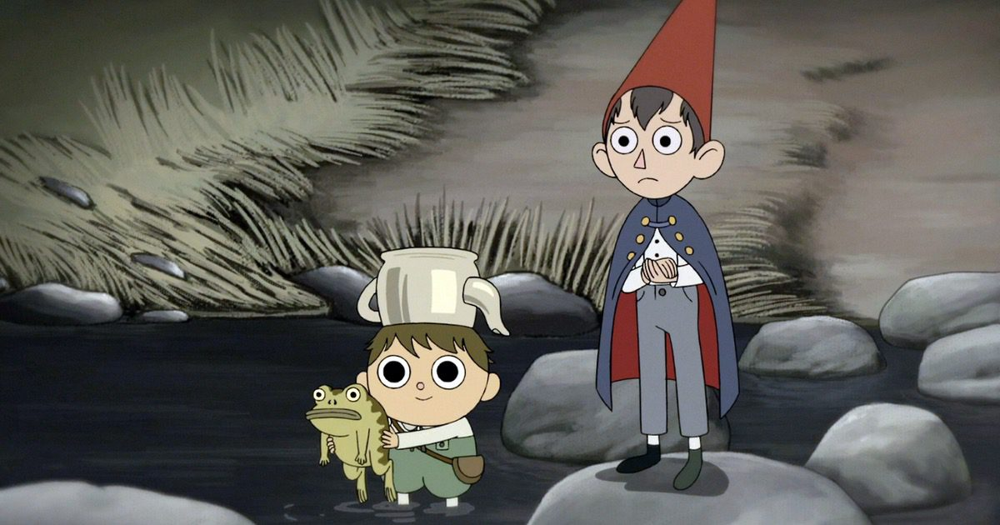

Personajes principales
- Wirt (hermano mayor)
- Greg (hermano menor)


Es una miniserie animada estadounidense de 10 episodios, creada por Patrick McHale, y transmitida en Cartoon Network. La miniserie se centra alrededor de dos hermanos que viajan a través de un extraño bosque con el fin de encontrar su camino a casa.


Mi primer sitio web, hecho con amor por Valery Ontiveros en el Bootcamp de Tecnolochicas PRO